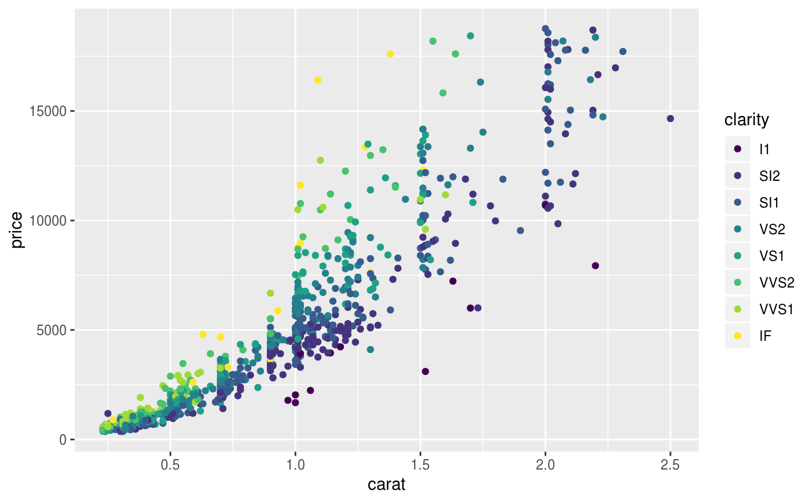
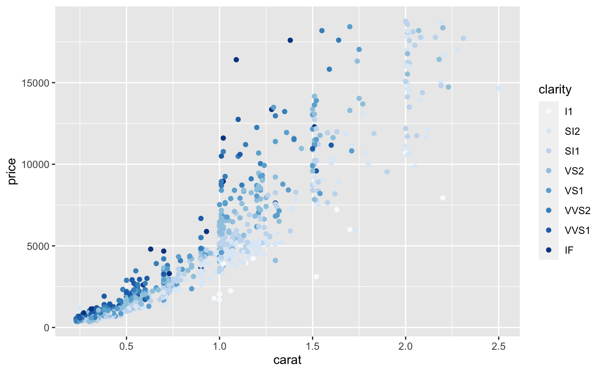
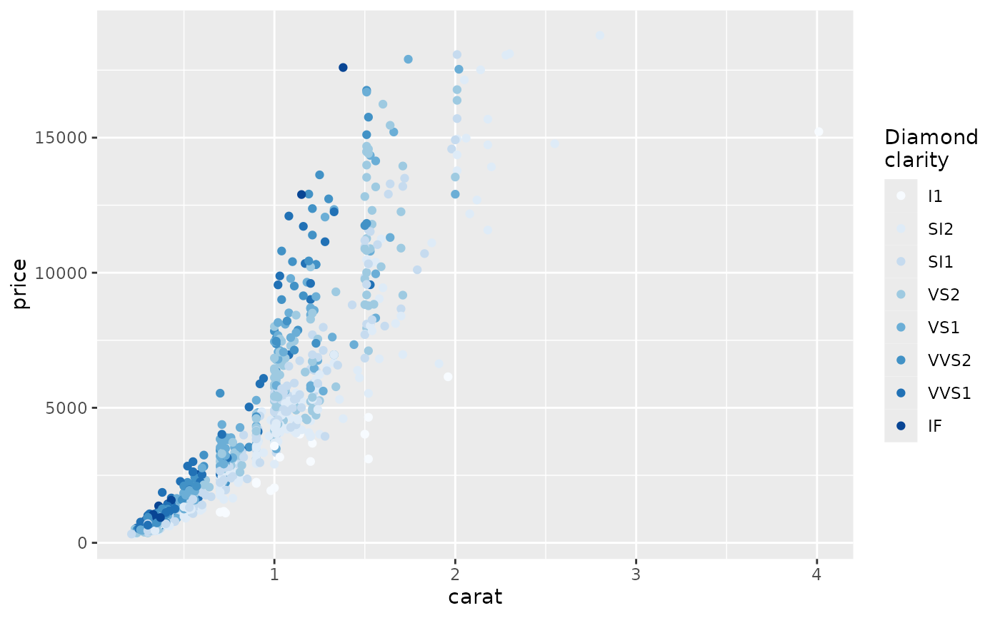
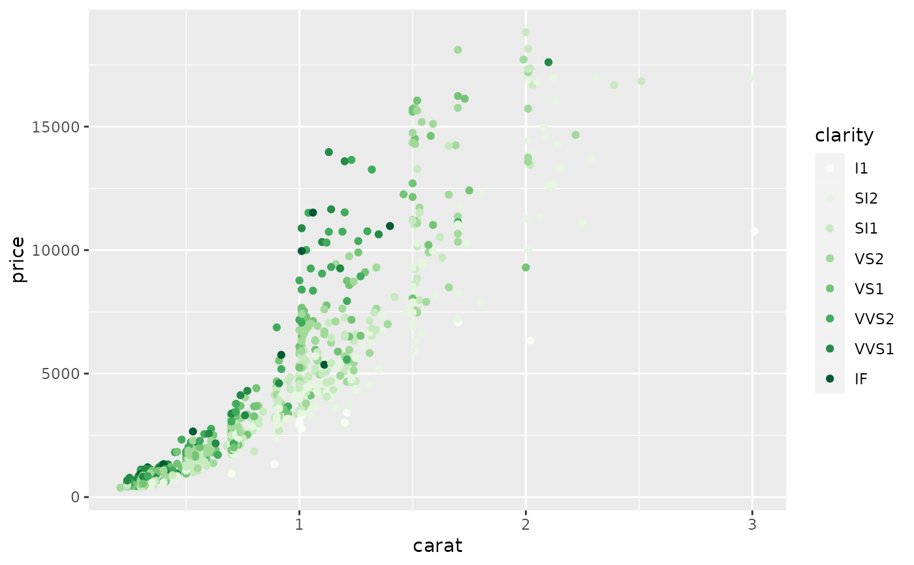
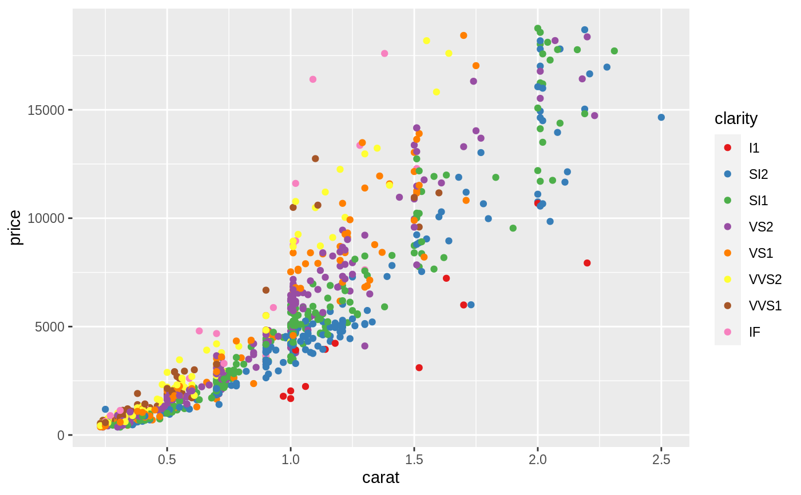
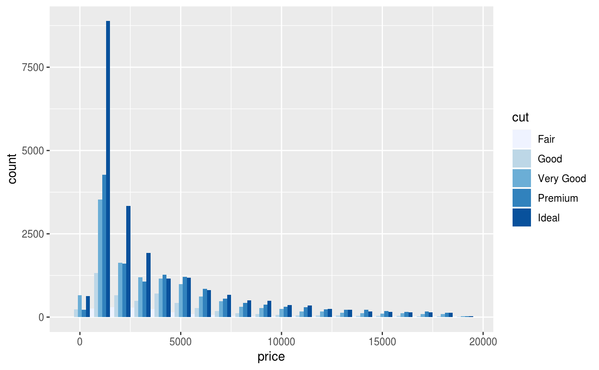
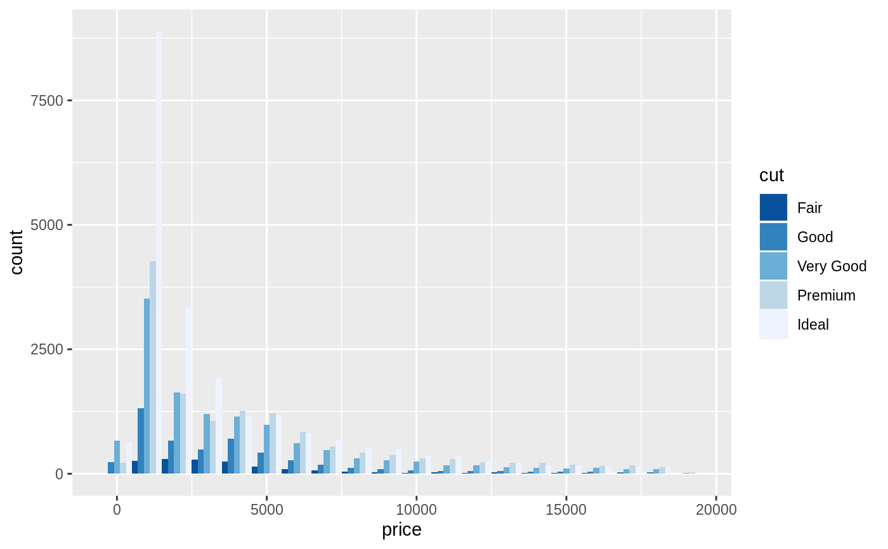
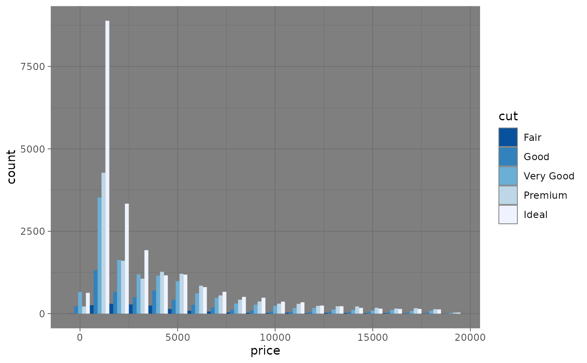
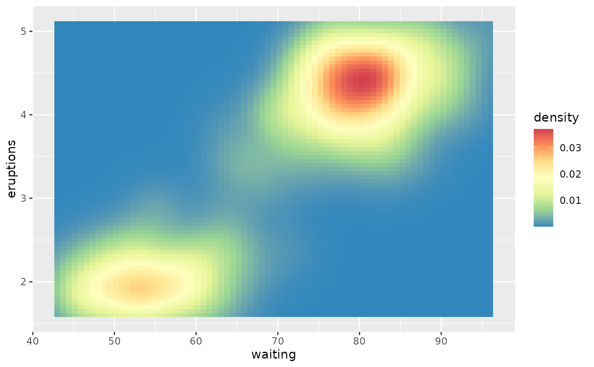

Sequential, diverging and qualitative colour scales from colorbrewer.org
Source:R/scale-brewer.r, R/zxx.r
scale_brewer.RdThe brewer scales provides sequential, diverging and qualitative
colour schemes from ColorBrewer. These are particularly well suited to
display discrete values on a map. See http://colorbrewer2.org for
more information.
scale_colour_brewer(..., type = "seq", palette = 1, direction = 1, aesthetics = "colour") scale_fill_brewer(..., type = "seq", palette = 1, direction = 1, aesthetics = "fill") scale_colour_distiller(..., type = "seq", palette = 1, direction = -1, values = NULL, space = "Lab", na.value = "grey50", guide = "colourbar", aesthetics = "colour") scale_fill_distiller(..., type = "seq", palette = 1, direction = -1, values = NULL, space = "Lab", na.value = "grey50", guide = "colourbar", aesthetics = "fill")
Arguments
| ... | Other arguments passed on to |
|---|---|
| type | One of seq (sequential), div (diverging) or qual (qualitative) |
| palette | If a string, will use that named palette. If a number, will
index into the list of palettes of appropriate |
| direction | Sets the order of colours in the scale. If 1, the default,
colours are as output by |
| aesthetics | Character string or vector of character strings listing the
name(s) of the aesthetic(s) that this scale works with. This can be useful, for
example, to apply colour settings to the |
| values | if colours should not be evenly positioned along the gradient
this vector gives the position (between 0 and 1) for each colour in the
|
| space | colour space in which to calculate gradient. Must be "Lab" - other values are deprecated. |
| na.value | Colour to use for missing values |
| guide | Type of legend. Use |
Details
The brewer scales were carefully designed and tested on discrete data.
They were not designed to be extended to continuous data, but results often
look good. Your mileage may vary.
Note
The distiller scales extend brewer to continuous scales by smoothly
interpolating 6 colours from any palette to a continuous scale.
Palettes
The following palettes are available for use with these scales:
- Diverging
BrBG, PiYG, PRGn, PuOr, RdBu, RdGy, RdYlBu, RdYlGn, Spectral
- Qualitative
Accent, Dark2, Paired, Pastel1, Pastel2, Set1, Set2, Set3
- Sequential
Blues, BuGn, BuPu, GnBu, Greens, Greys, Oranges, OrRd, PuBu, PuBuGn, PuRd, Purples, RdPu, Reds, YlGn, YlGnBu, YlOrBr, YlOrRd
See also
Other colour scales: scale_alpha,
scale_colour_gradient,
scale_colour_grey,
scale_colour_hue,
scale_colour_viridis_d
Examples
dsamp <- diamonds[sample(nrow(diamonds), 1000), ] (d <- ggplot(dsamp, aes(carat, price)) + geom_point(aes(colour = clarity)))d + scale_colour_brewer()# Change scale label d + scale_colour_brewer("Diamond\nclarity")# Select brewer palette to use, see ?scales::brewer_pal for more details d + scale_colour_brewer(palette = "Greens")d + scale_colour_brewer(palette = "Set1")# scale_fill_brewer works just the same as # scale_colour_brewer but for fill colours p <- ggplot(diamonds, aes(x = price, fill = cut)) + geom_histogram(position = "dodge", binwidth = 1000) p + scale_fill_brewer()# the order of colour can be reversed p + scale_fill_brewer(direction = -1)# the brewer scales look better on a darker background p + scale_fill_brewer(direction = -1) + theme_dark()# Use distiller variant with continous data v <- ggplot(faithfuld) + geom_tile(aes(waiting, eruptions, fill = density)) vv + scale_fill_distiller()v + scale_fill_distiller(palette = "Spectral")